The TrustLogix Blog
Explore the latest insights and trends in Data Access and DSPM.
Unified Lakehouse Policy: Write Once, Govern Everywhere
Apache Iceberg enables you to write once and query anywhere. It doesn't give you one set of rules to govern it. TrustAccess does. Suman Chandra Shekhar Ramakrishnan Read more Read more
Read MoreIs Your Agentic AI Secure and Audit-Ready?
A 10-question self-assessment for data and security teams. AI agents are moving at machine speed. Answer yes or no to each question to see whether your data security is keeping up. Kim Cook Read more Read more
Read MoreAgentic AI Compliance for Financial Services: Scale Fast, Audit with Confidence
Financial services firms deploying AI agents face a new compliance challenge: demonstrating that every agent operated within its authorized scope, accessed only permitted data, and left a complete audit trail. Here's what audit-ready agentic AI looks like in practice. Kim Cook Read more Read more
Read MoreWhy Many AI Companies Can't Solve Your Agentic AI Security Problem. But TrustLogix Can.
Why do so many AI security vendors fail in real enterprise environments? TrustLogix CEO Ron Longo explains what to ask before you buy — and why it matters. Ron Longo Read more Read more
Read MoreNon-Human Identity in Financial Services: Why IAM Can't Keep Up with AI Agents
AI agents in financial services run on service accounts with broad, persistent credentials that IAM was never designed to govern. Here's what non-human identity sprawl looks like, why it matters, and how to close the gap. Kim Cook Read more Read more
Read MoreFinancial Services Has a Blind Spot. It's Called AI Agents.
Financial services firms are deploying AI agents at scale, and most have no visibility into what those agents are accessing, on whose behalf, or under what authority. Here's why that matters. Kim Cook Read more Read more
Read More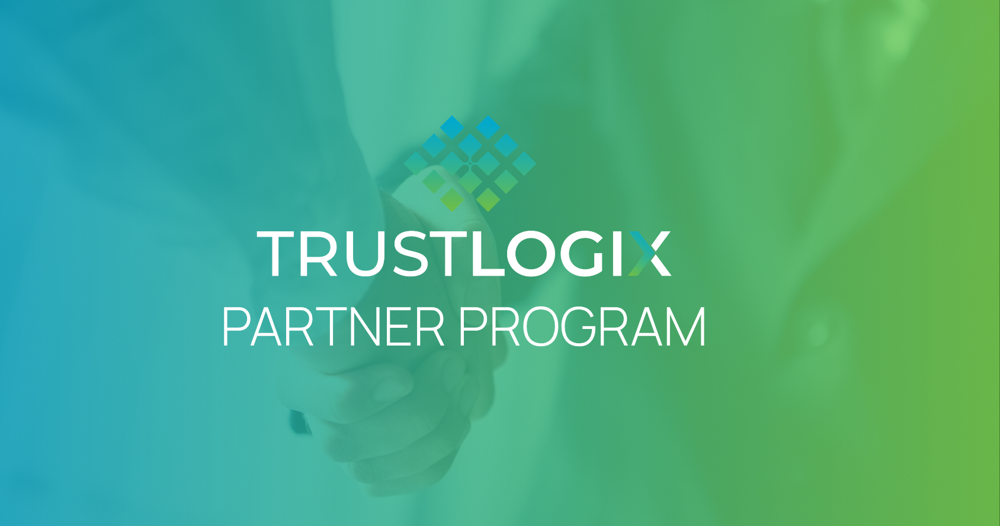
Every Enterprise AI Conversation Has a Data Security Problem. Here's How We're Helping Partners Solve It.
TrustLogix Head of Partnerships Thomas St. Onge announces the TrustLogix Partner Program, built to help technology and services partners win the enterprise AI security opportunity with dedicated tooling, joint go-to-market support, and a free 30-day proof of concept. Kim Cook Read more Read more
Read MoreAI Agent Sprawl Is the New Shadow IT — And Most Enterprises Aren't Ready
AI agents are proliferating faster than enterprise security teams can govern them. Learn how shadow AI agents create data access risk — and what it takes to control them. Kim Cook Read more Read more
Read MoreClean Data Isn't Enough: Can Your AI Teams Actually Access It?
Enterprises are spending millions preparing data for AI. The dirty secret? Most of it stalls in a security approval queue long after the data is ready, and that delay is costing more than the cleanup itself. Kim Cook Read more Read more
Read More
For AI Agents to Work at Scale, Access Context Can't Be Optional
When AI agents access enterprise data without security context, risk accumulates fast. TrustLogix Field CTO Simon Thornell on why the context layer and security context must work together — and what happens when they don't. Simon Thornell Read more Read more
Read MoreThe Hidden Cost of Running IBM Guardium DAM in a Hybrid Cloud Environment
IBM Guardium's agent-based architecture was built for on-prem databases. As enterprises migrate to hybrid and cloud environments, the infrastructure costs of running Guardium multiply. Here's what security teams need to know. Kim Cook Read more Read more
Read MoreAfter the Claude Code Leak: Why Enterprises Desperately Need a Kill Switch for AI Agent Data Access
The Claude Code leak exposed a critical gap: enterprises have no kill switch for AI agent data access. Learn how TrustAI provides real-time control at the data layer. Ganesh Kirti Read more Read more
Read More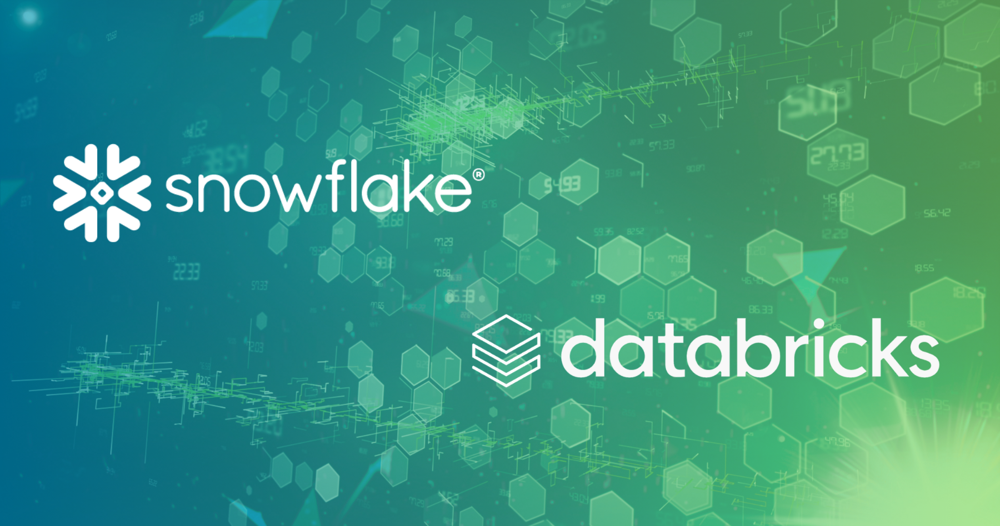
How to Secure Autonomous AI Pipelines in Snowflake and Databricks with Policy-Based Access Control
Snowflake Cortex and Databricks Genie move at machine speed. Learn how policy-based access control keeps your autonomous AI pipelines secure, governed, and audit-ready. Simon Thornell Sriprada Biduru Read more Read more
Read MoreAI Agent Security: Govern AI Agents and MCP at Machine Speed
AI agent security is the practice of enforcing least-privilege access and data protection for autonomous AI agents and MCP integrations. See how TrustLogix TrustAI governs agentic AI at machine speed. Kim Cook Read more Read more
Read MoreRole-Based Access Control (RBAC): The Complete Guide
RBAC assigns permissions by job role — but it doesn't scale. Learn how RBAC, ABAC, and PBAC work together to govern enterprise data access across cloud platforms. Kim Cook Read more Read more
Read MoreWhat Is DSPM? Data Security Posture Management Explained
Data security posture management (DSPM) discovers, classifies, and protects sensitive data across cloud environments. Learn how DSPM works — and why AI-era data teams need it to go further. Kim Cook Read more Read more
Read MoreEnterprise Data Access Control: The Complete Guide
A practical guide to enterprise data access control — from RBAC and ABAC to policy-based controls and AI agent governance across Snowflake and Databricks. Kim Cook Read more Read more
Read More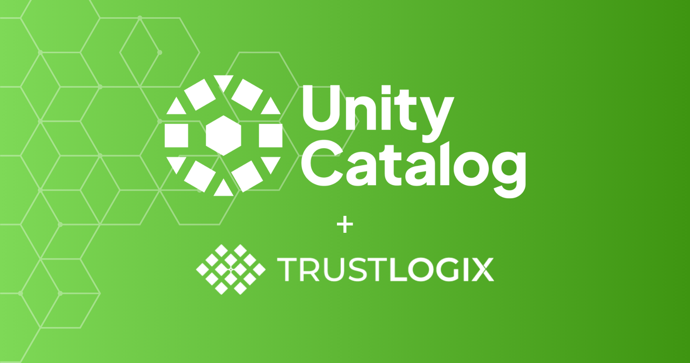
Databricks Unity Catalog Security: Closing the Access Control Gaps
Databricks Unity Catalog secures data within its runtime — but leaves gaps when data flows to BI tools, AI agents, or cross-region workflows. Learn how TrustLogix fills them. Simon Thornell Read more Read more
Read MoreHow Data Activity Monitoring Drives Adaptive, Risk-Based Access Control
A feedback loop between data activity monitoring and policy alignment enables adaptive, risk-based access control that reflects what is happening across the environment in real time. TrustLogix Team Read more Read more
Read MoreStreamlining Data Access Governance for Faster Data Product Deployment
See why the challenge isn’t building enterprise data products: it’s securing and governing data access at enterprise scale, all the way from data ingestion to visualization. TrustLogix Team Read more Read more
Read MoreThe Challenges of Securing Enterprise Data Products at Scale
See why the challenge isn’t building enterprise data products: it’s securing and governing data access at enterprise scale, all the way from data ingestion to visualization. TrustLogix Team Read more Read more
Read MoreStrengthen Data Security with Snowflake Trust Center and TrustLogix
TrustLogix’s new Trust Center integration lets Snowflake users expand their data security with deeper visibility, more fine-grained access controls, and an AI-driven workflow where security teams and data stewards can collaborate to remediate issues much faster. Sriprada Biduru Read more Read more
Read MoreTrustAI: The Non-Negotiable Data Security Layer for AI Agents
Don't let AI agent data security be a barrier to unlocking the full potential of AI. With TrustAI by TrustLogix, you can confidently drive innovation, knowing your most valuable asset, your data, is always protected, governed, and compliant. TrustLogix Team Read more Read more
Read MoreA New Chapter of Growth and Innovation at TrustLogix
TrustLogix welcomes Ron Longo as CEO, marking a new phase of growth and innovation in data security, while founders focus on advancing AI-powered technology. Ganesh Kirti Read more Read more
Read MoreData Domains: Local Control, Global Guardrails
Data Domains, a preview feature in TrustLogix, solves access issues (such as delay & multiple unneeded permissions) by enabling federated access control. Ganesh Kirti Read more Read more
Read More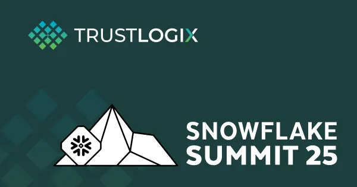
Snowflake Summit 2025: Security and Governance Highlights
Key message from Snowflake Summit 2025 was simplification—making it easier for organizations to build with data, deploy AI, & enforce governance at scale. Ganesh Kirti Read more Read more
Read More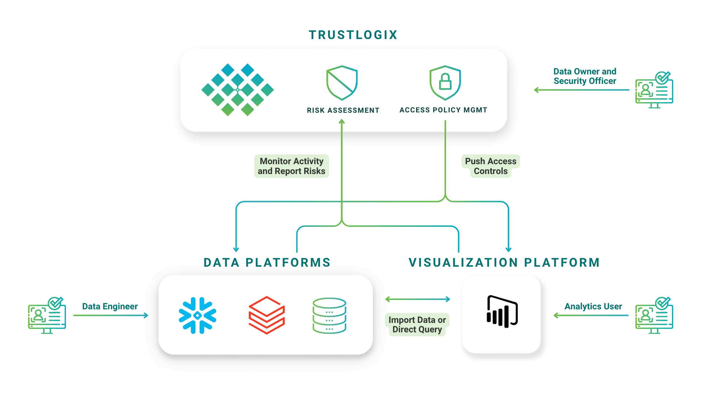
Keep Data Secure in Power BI with Unified Access Control
A challenge is preserving security and privacy controls as data moves between systems from secure sources into visualization tools like Microsoft Power BI. TrustLogix Team Read more Read more
Read More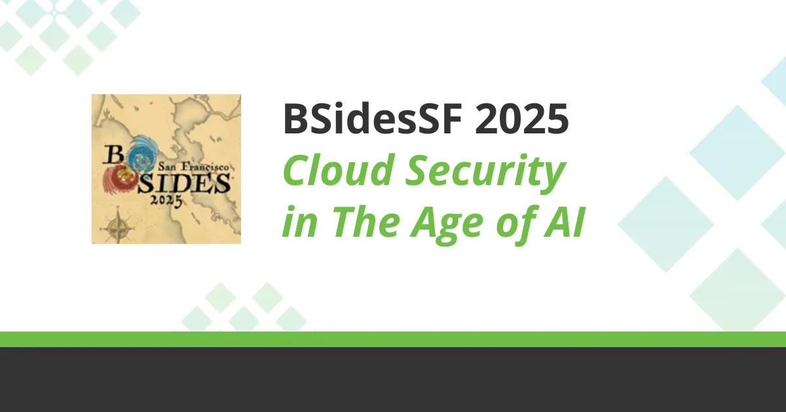
🐉 BSidesSF 2025: Cloud Security in The Age of AI
BSidesSF 2025 covered LLMs handling sensitive data, addressing prompt injection & model poisoning, and adapting frameworks for AI-specific threats. Sreeram Sandrapati Read more Read more
Read MoreSecurity Architecture: How TrustLogix Secures Data Access and Compliance in Multi-Cloud Environments
A unified security strategy is essential as data becomes increasingly fragmented across multi-cloud environments. TrustLogix offers a centralized solution, giving data and security teams a single point of visibility and control over sensitive data access across all clouds and platforms. Ganesh Kirti Read more Read more
Read MoreData Access Governance: The Importance of a Definitive Source For Access Controls
Maintaining consistent access policies has become complex and siloed, with data dispersed across various cloud environments, warehouses, and analytics tools. Ganesh Kirti Read more Read more
Read More
KuppingerCole Names TrustLogix a Leader in Data Security Platforms: Validating Enterprise Trust
Maintaining consistent access policies has become complex and siloed, with data dispersed across various cloud environments, warehouses, and analytics tools. TrustLogix Team Read more Read more
Read More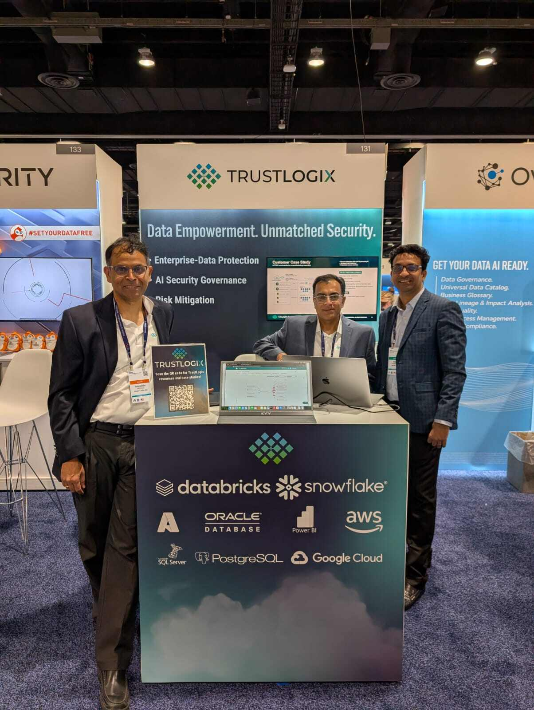
Decoding The Gartner Data & Analytics Summit
Learn about the key themes highlighted at the Gartner Data and Analytics Summit that resonated with TrustLogix's core mission and values. Manish Kalra Read more Read more
Read MoreNavigating DORA in Financial Services
Artificial intelligence and large language models (LLMs) enable innovative data-driven services, however, these advancements also bring significant challenges. Ganesh Kirti Read more Read more
Read More
Now in Public Preview: Securing Agentic AI with TrustLogix TrustAI and MCP
Leveraging MCP, TrustAI replaces fragmented, hardcoded agent connectors with a standardized security control plane that centralizes authentication, externalizes policy enforcement, and delivers unified auditability across all AI-to-data interactions. Simon Thornell Read more Read more
Read More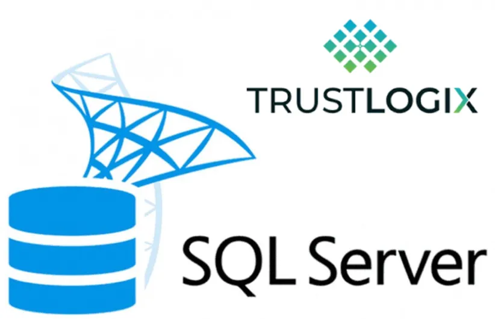
How TrustLogix Secures SQL Server Data for Financial Institutions
A complete data security posture: monitoring anomalous activities, tracking unauthorized data, and compliance with evolving regulations. Sharan Rayakar Read more Read more
Read MoreSnowflake DSPM: Moving Beyond CIS Benchmarks to Active Remediation
Learn how to go beyond CIS Snowflake Benchmarks with Active DSPM. Discover how TrustLogix automates Snowflake security remediation and enforces native, proxyless data access control. Ganesh Kirti Read more Read more
Read More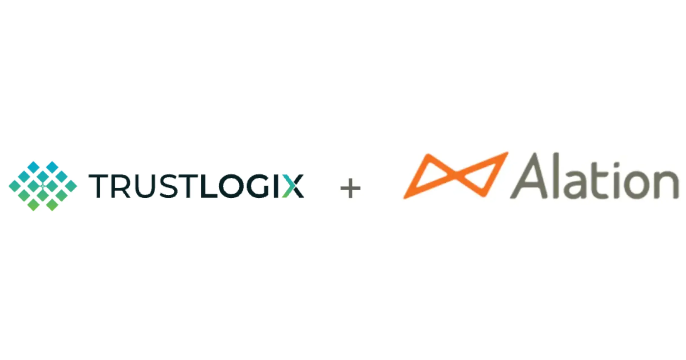
Accelerated AI & Data Security: Integrating TrustLogix with Alation for Trusted Data Access and Governance
This blog will walk you through how the technical integration between Alation and TrustLogix benefits both business and data users by simplifying data discovery, enhancing security, and driving better business outcomes through faster, safer data access. Stephanie Yuen Srikanth Sallaka Read more Read more
Read MoreEmpowering Healthcare Enterprise: Achieve Dynamic Access and Robust Security
We'll delve into how TrustLogix helps Healthcare organizaton meet Data Access Control needs. TrustLogix Team Read more Read more
Read MoreHow to: Safeguard Your Snowflake Data with a No-Code Approach
We'll delve into how TrustLogix has been enabling enterprises to ensure a continuous monitoring of their security controls as well as remediating the risks. TrustLogix Team Read more Read more
Read MoreFortify Your Snowflake Account: Take Steps to Enhance Your Data Security
The TrustLogix team is here to help strengthen your security defenses. Contact us to reinforce your security posture and fulfill the shared security responsibility. Srikanth Sallaka Read more Read more
Read MoreProtecting Data in AI/ML Systems: Best Practices and Strategies
This blog is part of a multi-part blog series on how to build a Resilient AI System. In this blog, we will cover how to protect the data used for training and inference Srikanth Sallaka Read more Read more
Read MoreEnsuring Model Security in the Era of Generative AI
This blog is part of a multi-part blog series on how to build a Resilient AI System. In this blog, we will review ML model security: Srikanth Sallaka Read more Read more
Read MoreEnhancing Data Security Using RBAC and ABAC for Least Privilege
Explore how Role-Based Access Control (RBAC) and Attribute-Based Access Control (ABAC) can be utilized to enforce the principle of least privilege and secure data at the row and column level. Srikanth Sallaka Read more Read more
Read MoreThe Risks of Ghost and Inactive User Accounts to Cloud Data
Ghost and inactive user accounts, often overlooked and unmanaged, can pose severe risks to an organization's data integrity and security posture. Srikanth Sallaka Read more Read more
Read MoreUnveiling the Lurking Threat of Dark Data
Understand the concept of dark data, its far-reaching implications and learn a few practical strategies to combat this often-overlooked challenge. Srikanth Sallaka Read more Read more
Read MoreSiloed RBAC Role Explosion and Its Impact on Data Access Security Management
In this blog post, we will explore the intricacies of siloed RBAC role explosions and the significant challenges it poses for effective data access security management. Srikanth Sallaka Read more Read more
Read More
Standardized Provisioning of Entitlements for Large Numbers of Data Workers
TrustLogix provides a cloud-based data security platform that offers a comprehensive solution to control data access by granting access only to authorized users and roles. Srikanth Sallaka Read more Read more
Read More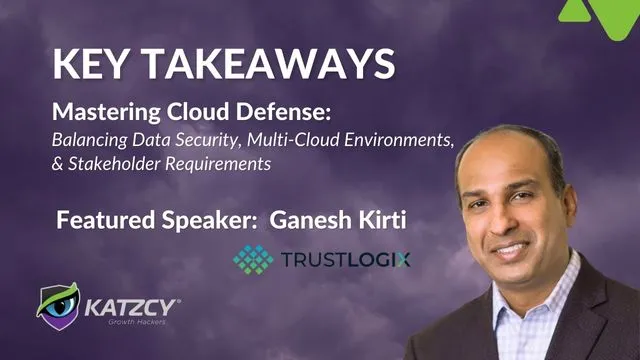
Webinar: Mastering Cloud Defense
Key Takeaways and Q&A from our recent webinar: Mastering Cloud Defense TrustLogix Team Read more Read more
Read MoreIneffective Access Grants in Data Access Security Management
Access management is the cornerstone of data security, and when it falters, the consequences can be severe. Ganesh Kirti Read more Read more
Read More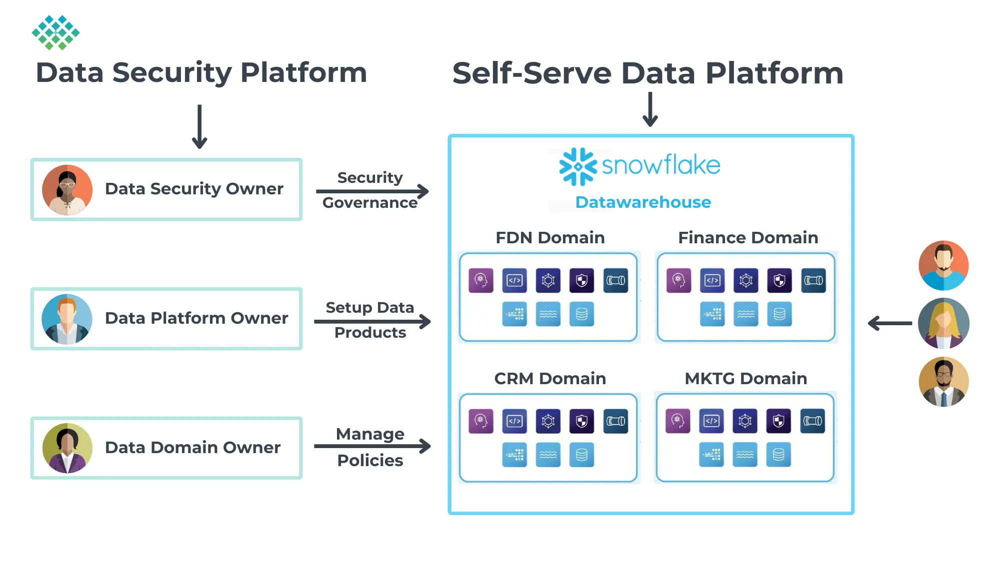
Modernizing Data Access: Self-Service Data Access Provisioning
This blog explains self-service data access provisioning, why it's critical for your organization, what you need to build it, and finally, how we are helping customers build self-service capabilities and automated workflows to accelerate data access provisioning to meet the demands of modern cloud data warehouses and data lakes. Srikanth Sallaka Read more Read more
Read More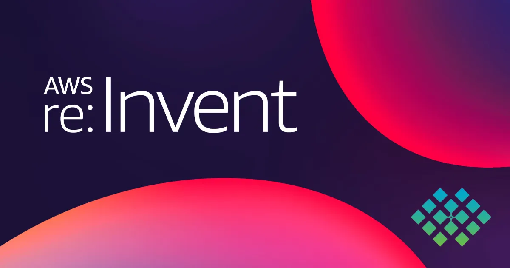
Modernizing Data Access: Self-Service Data Access Provisioning
As we bid farewell to 2023, we reflect on the strides in technology, Generative AI, Large Language Models, and the role of data security / governance. TrustLogix Team Read more Read more
Read More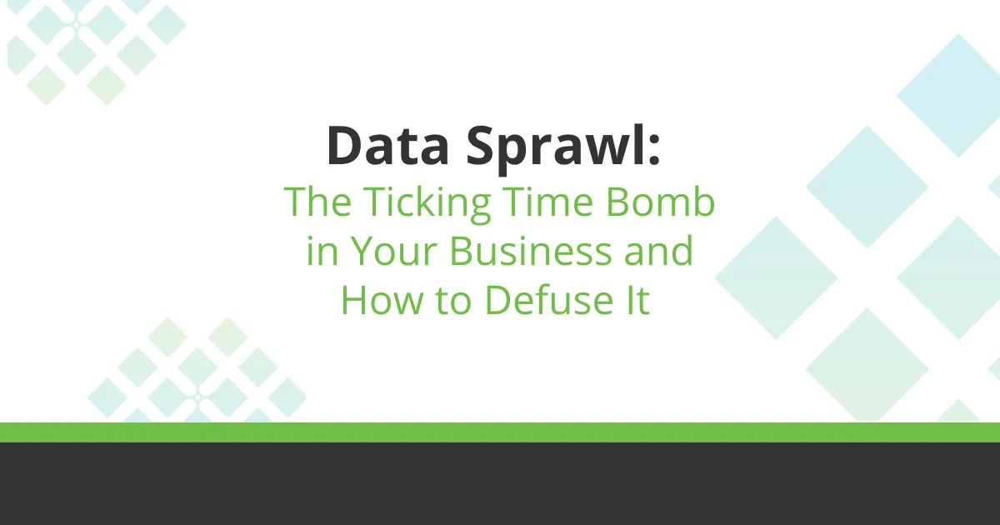
Data Sprawl: The Ticking Time Bomb in Your Business and How to Defuse It
Key Takeaways and Q&A from our recent Data Sprawl: The Ticking Time Bomb in Your Business and How to Defuse It TrustLogix Team Read more Read more
Read More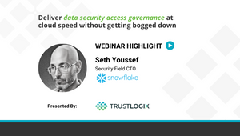
Webinar Highlight: Seth Youssef of Snowflake
Quick highlight from TrustLogix webinar, "Deliver Data Access Security Governance at Cloud Speed Without Getting Bogged Down!" TrustLogix Team Read more Read more
Read More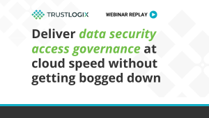
Webinar: Deliver Data Access Security Governance At Cloud Speed Without Getting Bogged Down
Key Takeaways and Q&A from our recent webinar: Deliver Data Access Security Governance At Cloud Speed Without Getting Bogged Down TrustLogix Team Read more Read more
Read MoreLeveraging TrustLogix to Uphold Your End of Snowflake's Shared Responsibility Model with CIS Benchmark Alignment
Snowflake's cloud data platform enables enterprises to efficiently store and analyze massive amounts of data. Securing data in the cloud requires shared responsibility. Ganesh Kirti Read more Read more
Read More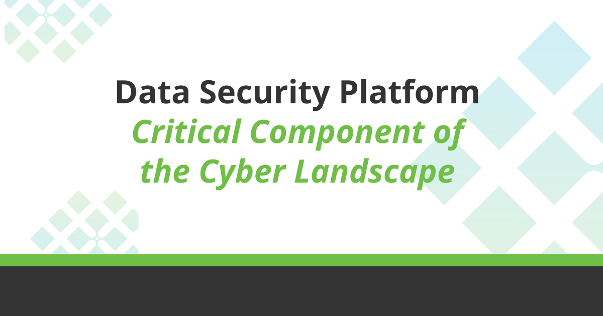
Data Security Platform Highlighted as a Critical Component of the Cyber Landscape
As businesses strive to become more data-driven and their data footprint expands across multiple data clouds, they’re encountering hard data access, security, and compliance problems. Ganesh Kirti Read more Read more
Read More
RBAC or ABAC: Which is Better? Enforcing Risk-Adaptive Access Control in the Cloud
Which is better RBAC or ABAC? Learn how to implement risk-adaptive access control best suited to the demands of your organization's data workloads. TrustLogix Team Read more Read more
Read MoreCustomer Spotlight: Zeta Global Streamlines Snowflake Data Access Management and Reduces Operational Complexity of Managing Multiple Accounts
Leading global marketing technology firm Zeta Global streamlines data access management with TrustLogix across its Snowflake accounts to stay at the forefront of data privacy and security. TrustLogix Team Read more Read more
Read MoreSnowflake Summit 2023 Takeaways
This year’s Snowflake Summit was held in Las Vegas last week, and it was as engaging and educational as ever. TrustLogix Team Read more Read more
Read MoreVisibility Monitoring and Protection of a Major Investment Bank’s Data in Snowflake
In this post, learn how an investment bank got visibility into its entire Snowflake data ecosystem, and how its data was being accessed throughout the org. TrustLogix Team Read more Read more
Read More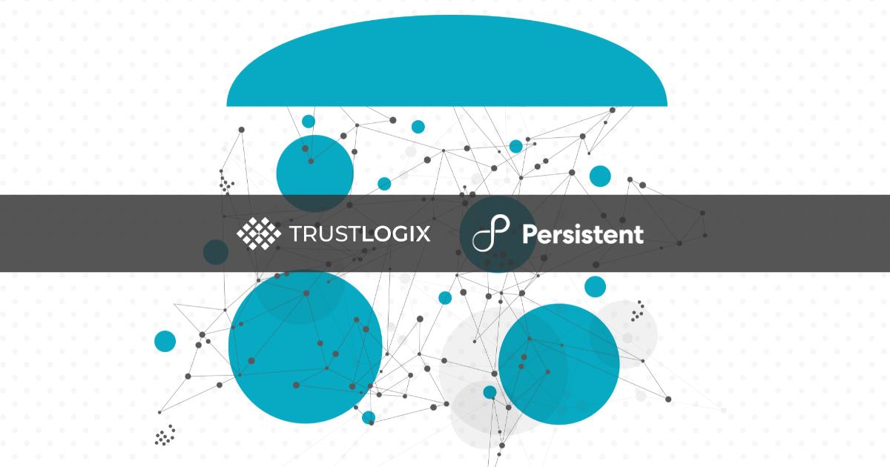
Securing Your Snowflake Data Mesh
Data Mesh is a best practice for how individual functions can take ownership of their respective data, including its sources, structure, ongoing governance, and make it available to others as a Data Product. TrustLogix Team Read more Read more
Read MoreThe Top 7 Cloud Data Security Issues That You Don’t Know About
Many victims of breaches and failed audits before they actually happen is because of overlooked issues that weren’t obvious without looking for them. TrustLogix Team Read more Read more
Read MoreThe Dirty Little Secret of Data Security
Data security vendors make you start by discovering & classifying your sensitive data. The dirty little secret: Data discovery & classification is hard. TrustLogix Team Read more Read more
Read MoreRSA Conference 2023 Takeaways: Separating Signal from Noise in the Data Security Space
Almost 50,000 security professionals and experts share ideas, best practices and new technologies to combat the latest cybersecurity threats at RSA Conference 2023. TrustLogix Team Read more Read more
Read MoreSecuring Data in the Cloud: Security Blind Spots Will Hurt You
In the old days of on-premise data warehouses and data lakes, data security was simpler. Organizations brought their data to a single platform. TrustLogix Team Read more Read more
Read More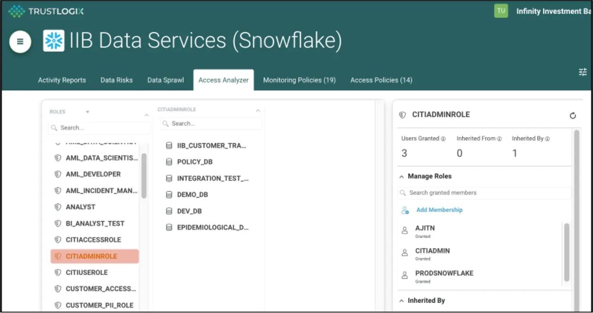
Simplify Multi-Cloud Data Entitlements with Access Analyzer
TrustLogix Data Access Analyzer simplifies operational complexity and Role Explosion across disparate platforms like Snowflake, Databricks, Redshift and more TrustLogix Team Read more Read more
Read More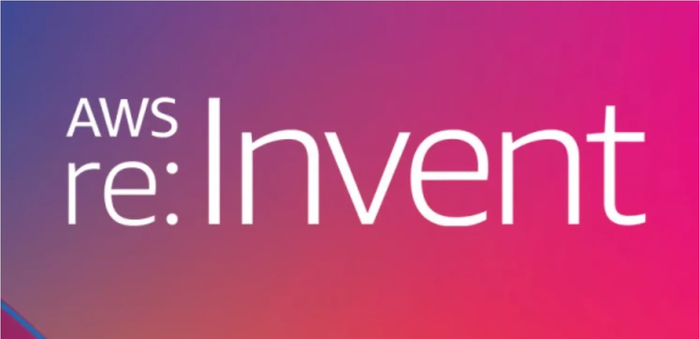
Data-Centric Security Announcements at AWS re:Invent 2022
Data was a key theme for many announcements at re:Invent 2022. This post recaps the announcements related to data-centric security. TrustLogix Team Read more Read more
Read MoreGet Proactive During Cybersecurity Awareness Month
TrustLogix is proud to partner with the National Cybersecurity Alliance to sponsor Cybersecurity Awareness Month TrustLogix Team Read more Read more
Read MoreScalable Granular Data Entitlements with Redshift RLS and TrustLogix
Redshift’s new RLS capabilities deliver benefits and scalability for Data Entitlements, and TrustLogix compounds those benefits across Redshift clusters TrustLogix Team Read more Read more
Read MoreData Catalog + Data Access Governance = Data Centric Security
Data Intelligence and Data Access Governance are two pillars of data security. Use the two together to safeguard your sensitive data. TrustLogix Team Read more Read more
Read MoreRock Solid Security for Ephemeral Cloud Data Access Control
Data complexity, growth, and sharing are creating a security and governance nightmare , and require an ephemeral Cloud Data Access Governance solution. TrustLogix Team Read more Read more
Read MoreFour Ways to Avoid Role Explosion in Data Access Control
Roles are a powerful way to scale security operations, but can become unwieldy if not properly implemented. Here are four techniques that help! TrustLogix Team Read more Read more
Read MoreData Entitlements: How to Secure Data Access from Day One
Data entitlements define who can access what data from the moment it's created. Learn how a birthright entitlement model enforces least-privilege access at scale across cloud data platforms. TrustLogix Team Read more Read more
Read More
Collibra and TrustLogix Integration Closes the Loop Between Data Classification and Data Access
The Collibra-TrustLogix integration empowers customers to leverage Collibra Classification and Catalog capabilities directly within the TrustLogix GUI TrustLogix Team Read more Read more
Read MoreWhy IAM Is Insufficient for Data-Centric Security
IAM is foundational technology and orgs are stretching it for their data security needs. Here's why that's *insufficient* and what else is needed. Chris Olive Read more Read more
Read More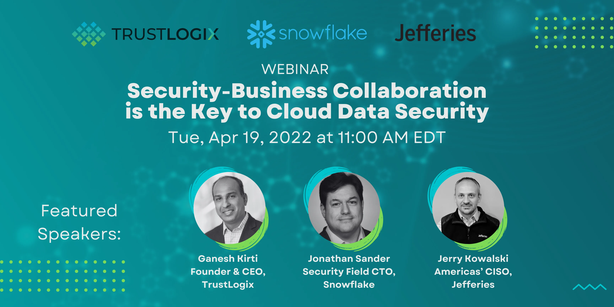
Webinar: Security-Business Collaboration is the Key to Cloud Data Security
Key Takeaways and Q&A from our recent webinar: Security-Business Collaboration is the Key to Cloud Data Security TrustLogix Team Read more Read more
Read MoreSnowflake Secure Data Sharing: A Step-by-Step Guide
Learn how to implement secure data sharing in Snowflake with fine-grained access controls, row-level security, and policy enforcement that extends to Databricks and Power BI. TrustLogix Team Read more Read more
Read MoreData Lake Security: Best Practices for Cloud Environments
Data lake security requires fine-grained access controls, continuous monitoring, and consistent policy enforcement. Learn the best practices for securing Snowflake, Databricks, and AWS. TrustLogix Team Read more Read more
Read MoreMulti-Cloud Data Security: A Definition and Best Practices
In this post, we'll cover multi-cloud environments including how they function and best practices for multi-cloud data security. TrustLogix Team Read more Read more
Read MoreWhat Is Fine-Grained Data Access Control?
Fine-grained data access control enforces row- and column-level policies across Snowflake, Databricks, and cloud platforms. Learn how it works and why RBAC alone isn't enough. TrustLogix Team Read more Read more
Read MoreEnforcing Least Privilege and SoDs in a Multi-Cloud environment
Cloud data environments create significant challenges for enforcing key security / governance principles. Learn what they are and TrustLogix can help. Srikanth Sallaka Read more Read more
Read MoreData Entitlements Architecture Inspired by the mRNA Vaccine
Compares and contrasts different vaccines and approaches to fighting a pandemic, and draws parallels and lessons learned for Data Security architecture Ranjeet Vidwans Read more Read more
Read More
Fine-Grained Data Authorization in Multi-Cloud Environments
Learn how Fine-Grained Access Policies and Data Entitlements secure your data across disparate cloud platforms. Srikanth Sallaka Read more Read more
Read More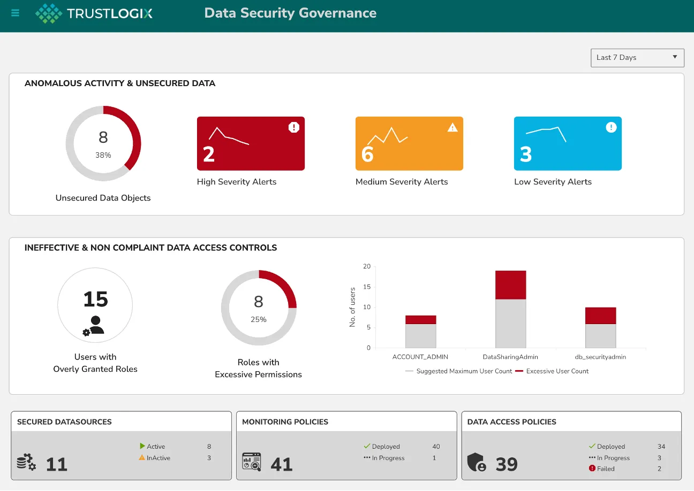
Data-Centric Security Model: A 4-Step Framework
A data-centric security model protects sensitive data wherever it lives — across Snowflake, Databricks, and multi-cloud environments. Follow this 4-step framework to build yours. TrustLogix Team Read more Read more
Read MoreWhat Identity Management Teaches CSOs/CDOs about Data-Centric Security
20 years ago, identity proliferation launched Identity Management. Just so, data proliferation today requires a new Data-Centric Security approach. Chris Olive Read more Read more
Read More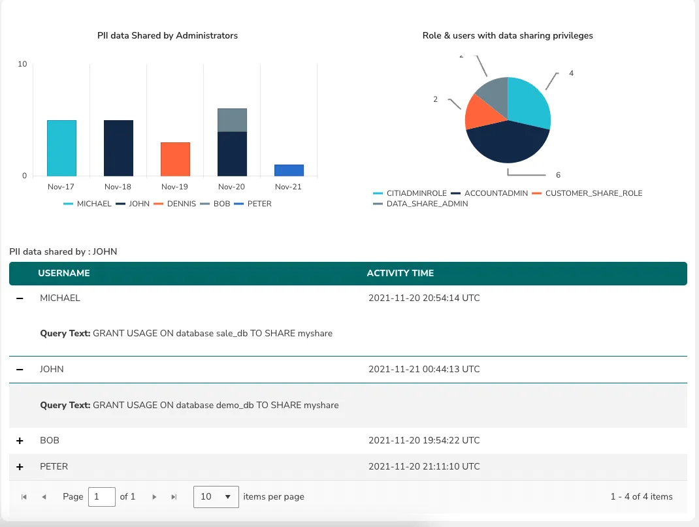
Identify Blind Spots in Your Cloud Using Data-Centric Security
The rush to migrate data to the cloud has created Blind Spots that create risk and cost for organizations. A data-centric security approach can help. Srikanth Sallaka Read more Read more
Read MoreMost 2021 Data Breaches Were Cloud-based: Learn to Protect Yourself
7 of the top 10 data breaches last year were in the cloud. We look at each and provide 3 steps to protect your organization, including data access control. TrustLogix Team Read more Read more
Read MoreTrustLogix Data Security Tool Integrates with Snowflake Architecture
See how TrustLogix, a Snowflake Data Cloud Partner, secures data within Snowflake, data pipelines, data lakes & BI analytics platforms with access control. Srikanth Sallaka Read more Read more
Read MoreHow the TrustLogix Platform Simplifies Data Security in Snowflake
Learn how TrustLogix, a Snowflake Data Cloud Partner, helps teams monitor data usage, identify security issues, and more with access control policies. Srikanth Sallaka Read more Read more
Read More
A Modern Architecture and Framework for Cloud Data Security Governance
Learn how Snowflake partner Trustlogix uses access control policies to secure data within Snowflake, data pipelines, data lakes and BI analytics platforms. Ganesh Kirti Read more Read more
Read MoreNo blog posts match your search.

Experience TrustLogix in Action
Schedule a call to discover how TrustLogix can accelerate your AI initiatives with faster, safer data access.